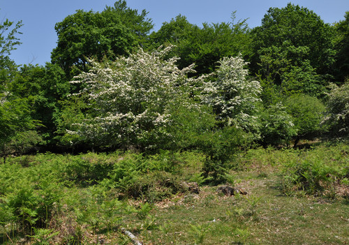
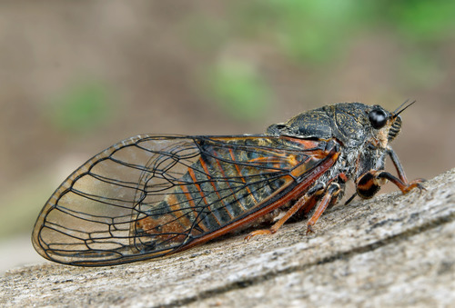

The New Forest cicada (Cicadetta montana s. str.) is the only cicada native to the UK. During May to July it sings with a very characteristic high-pitched song that is particularly difficult for most adults to hear, because it's at the edge of our hearing range. Sightings of the cicada within the New Forest date back to 1812, but the last unconfirmed one was in 2000. However, it's quite likely that colonies remain undiscovered in less visited parts of the forest. The New Forest Cicada Project has developed this app, which can detect and recognise the song of the cicada, to allow everyone to join the hunt.
So far, the New Forest cicada has only been found in the New Forest, Hampshire, and in one location in Surrey. Cicadas like warm, sunny weather, and for this reason England may not be their place of choice. However, the same species of insect, Cicadetta montana, is found in many other parts of the world, including Asia and Southern Europe.
The cicada's favourite habitat is represented by sunny, south-facing clearings, at the edges of the woodland, where the females would be found in lower vegetation, such as bracken, while the males will be singing from high up in the canopy, occasionally descending to mate with the females. The cicada is also thought to like hawthorn and small leaved lime trees. The photo below is a good example of this typical habitat.

Cicadas have long, transparent, very characteristic wings with which they fly quickly from one branch to another. They are predominantly black, with orange lines across their abdomen and legs. They also have cute big black eyes.

Cicadas live underground for years before emerging to live their adult life and to find a partner. Only male cicadas sing. The females respond to the song of a male with a brief wing click. Cicadas like warm sunny days when there is no wind. That's why you will only likely hear them between mid-May and July. If it's windy, cold or rainy, however, they will not sing at all and they may not even come out of their underground refuge for the entire season.
The male sings continuously to attract a partner for about 20-30 seconds and then pauses for a couple of minutes. The song starts quietly, and gradually becomes louder and stronger, before stopping very suddenly. If they are scared or feeling a bit cold, they'll stop immediately. The song sounds like air escaping from a hose, and is so high pitched (around 14-15kHz) that you may not be able to hear it. Even if you can, sometimes it's difficult to separate it from background noise. However, the microphone of your phone is very sensitive, and this app can detect and recognise the song of the cicada. Listen to this sample to acquaint yourself with the call, but be aware that the phone's speaker may not reproduce the very frequencies of the song very well.
The discovery of a specimen living in the New Forest would be outstanding! However, you must not catch it because they are endangered and you may be looking at the last live specimen. Do take a picture if you can see it, but don't get too close or disturb it. The best thing to do is to use this app to record the cicada's song and send the report straight away. If you are really sure you are hearing one and would like to inform someone in person, you can email our team at info@newforestcicada.info.
Our project website is a great source of information about the cicada. You'll also be able to contact us from there and participate in the online forum discussions. We are always keen to hear from other New Forest cicada enthusiasts!